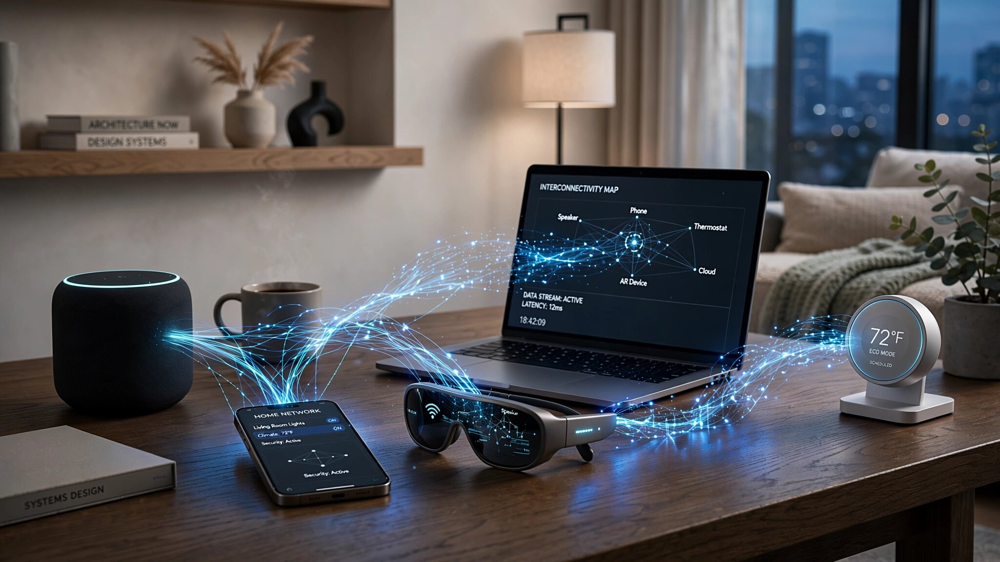

Protocol and Runtime System for Dynamic AI Inference Orchestration Across Heterogeneous Edge Devices with Context Handoff and Per-Device Privacy Enforcement

Abstract
Disclosed is a protocol and runtime system for orchestrating AI inference across heterogeneous edge devices — smartphones, smart speakers, AR glasses, laptops, smart home hubs, and IoT devices — connected within a local network. The system dynamically partitions neural network computation across available Neural Processing Units (NPUs) based on real-time device capability assessment, battery state of charge, thermal headroom, network latency measurements, and task priority. A "context handoff" mechanism transfers conversational state, user intent, and partial computation results between devices as the user moves through physical space, enabling seamless AI interaction continuity (e.g., starting a conversation on a kitchen smart speaker, continuing on AR glasses while walking to the garage, and completing on a car's infotainment system). A unified privacy layer enforces per-device data residency policies, ensuring that sensitive data processed on personal devices does not transit through less-trusted shared devices.
Field of the Invention
This invention relates to distributed computing and edge AI, specifically to systems for coordinating AI inference workloads across multiple heterogeneous devices in local networks with dynamic load balancing, context continuity, and privacy enforcement.
Background
The global installed base of NPU-equipped devices exceeded 1.5 billion in 2025 (Counterpoint Research), including smartphones (Qualcomm Snapdragon 8 Gen 3 at 45 TOPS, Apple A17 Pro at 35 TOPS, MediaTek Dimensity 9300 at 40 TOPS), laptops (Intel Meteor Lake at 10 TOPS, AMD Ryzen AI at 16 TOPS, Apple M4 at 38 TOPS), and smart home devices (Google Edge TPU at 4 TOPS, Amazon AZ2 at 8 TOPS). Despite this installed capacity, IDC estimates that on-device NPUs are utilized at less than 5% capacity on average.
Current AI assistant architectures use a hub-and-spoke model where each device independently communicates with a cloud backend. Apple's Core ML runs models locally but only on the individual device. Google's AI Core on Android similarly operates in single-device mode. Amazon's Alexa Voice Service processes nearly all inference in the cloud.
US11604948B2 (Google) describes distributing ML inference across edge devices but does not include context handoff or privacy-aware routing. US20230112637A1 (Apple) describes multi-device task handoff but for application-level tasks, not neural network computation partitioning. Matter/Thread protocols define smart home device communication but do not address AI inference orchestration.
Detailed Description
1. Device Capability Discovery and Assessment
The system uses a modified mDNS/DNS-SD protocol to discover AI-capable devices on the local network. Each device publishes its capabilities: NPU type and TOPS rating; available memory for model execution; current battery state of charge and charging status; thermal state (degrees below throttling threshold); supported model formats (ONNX, Core ML, TFLite, GGUF); currently loaded models and their memory footprint; and network interface speeds (Wi-Fi 6E, Bluetooth 5.3, Thread). A central orchestrator (which can run on any sufficiently capable device) maintains a real-time capability matrix updated every 10 seconds.
2. Dynamic Inference Partitioning
When an AI inference request arrives (e.g., a voice query to a smart speaker), the orchestrator evaluates the computational requirements against available device capabilities. For models that can be partitioned (transformer models with separable attention heads, or encoder-decoder architectures with separable components), the orchestrator computes an optimal partition plan minimizing total latency subject to: device capability constraints, network transfer costs for intermediate activations, battery preservation priorities (configurable per-device), and thermal headroom requirements. For non-partitionable models, the orchestrator selects the optimal single device based on the same constraints.
3. Context Handoff Protocol
When a user physically moves between device proximity zones (detected via BLE beacon strength, Wi-Fi signal triangulation, or explicit device activation), the system transfers: current conversation state (serialized attention KV cache for the active model); user intent representation (the current task or query in progress); partial computation results (intermediate layer activations if inference was mid-stream); and session metadata (conversation history context window, active tools, pending actions). The handoff is seamless from the user's perspective — the receiving device continues the conversation without requiring the user to repeat context. Handoff latency target: <500ms for conversation state, <2s for full KV cache transfer.
4. Per-Device Privacy Layer
Each device maintains a privacy classification: personal (user's phone, laptop — full data access), shared-trusted (family smart speaker — limited personal data), shared-untrusted (hotel smart display — no personal data), and public (shared workspace devices — anonymized interaction only). The privacy layer enforces: data residency (personal data never leaves personal devices; shared devices receive only anonymized context); computation routing (privacy-sensitive inference such as health data analysis routes exclusively to personal devices regardless of computational efficiency); and audit logging (all cross-device data transfers are logged with privacy classification of source and destination).
Claims
- A computer-implemented method for distributed AI inference orchestration comprising: discovering AI-capable devices on a local network via modified service discovery protocol; assessing each device's real-time capabilities including NPU capacity, battery state, thermal headroom, and loaded models; receiving an AI inference request; computing an optimal inference partition plan across available devices; dispatching partitioned computation to selected devices; and assembling partial results into a complete inference output.
- The method of claim 1, wherein the partition plan minimizes total inference latency subject to per-device battery preservation priorities, thermal constraints, and network transfer costs for intermediate activations.
- The method of claim 1, further comprising a context handoff protocol that transfers conversation state, user intent, and partial computation results between devices when the user moves between device proximity zones.
- The method of claim 3, wherein proximity zone transitions are detected via BLE beacon signal strength changes, Wi-Fi signal triangulation, or explicit device activation events.
- The method of claim 1, further comprising a per-device privacy enforcement layer that classifies devices into privacy tiers and restricts data residency and computation routing based on device classification.
- A distributed edge AI orchestration system comprising: a device discovery module; a real-time capability assessment module; an inference partitioning optimizer; a context handoff engine; a privacy enforcement layer; and a result assembly module.
- The system of claim 6, wherein the orchestrator role is dynamically assigned to the most capable currently-active device and can migrate if that device becomes unavailable or resource-constrained.
- The system of claim 6, supporting heterogeneous model formats across devices by maintaining format-specific adapters for ONNX, Core ML, TFLite, and GGUF model representations.
- A method for privacy-aware AI computation routing comprising: classifying each available device into a privacy tier based on ownership and trust level; tagging each inference request with a minimum required privacy tier based on the data sensitivity of input features; routing computation exclusively to devices meeting or exceeding the required privacy tier; and logging all cross-device data transfers with source and destination privacy classifications.
- The method of claim 9, wherein privacy tiers include personal, shared-trusted, shared-untrusted, and public, with configurable data residency and computation routing rules per tier.
Implementation Notes
A reference implementation uses gRPC for inter-device communication over local Wi-Fi, ONNX Runtime as the cross-platform inference engine, and a custom mDNS extension for capability advertisement. Testing across a 5-device home network (iPhone 16, MacBook Pro M4, HomePod, Meta Ray-Ban glasses, Pixel Tablet) demonstrates: average context handoff latency of 340ms, inference throughput improvement of 2.3× compared to single-device execution for partitionable 7B parameter models, and NPU utilization increase from 3% to 28% across the device fleet during active use periods.